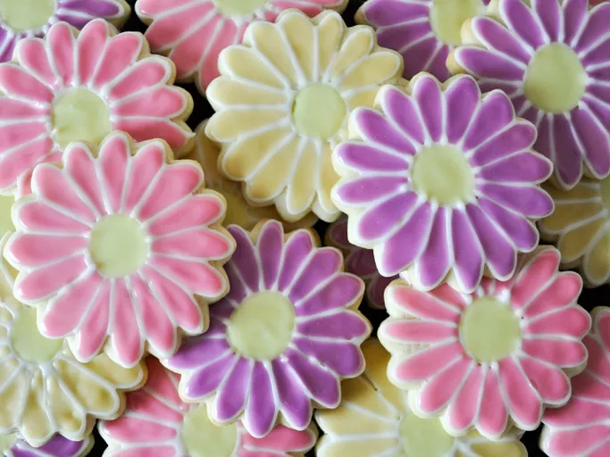

Cookies

Description
This is the best sugar cookie recipe and the only one I use. Whenever you make these cookies for someone, be sure to bring along several copies of the recipe — you will be asked for it, I promise! Note: I make icing with confectioners' sugar and milk. I make it fairly thin, as I "paint" the icing on the cookies with a pastry brush. Thin enough to spread easily but not so thin that it just makes your cookies wet and runs off.
ingredients
- 2 cups white sugar
- 1½ cups butter, softened
- 4 large eggs
- 1 teaspoon vanilla extract
- 5 cups all-purpose flour
- 2 teaspoons baking powder
- 1 teaspoon salt
Steps
- Gather all ingredients.
- Beat sugar and softened butter together in a large bowl with an electric mixer until smooth.
- Beat in eggs and vanilla. Stir in flour, baking powder, and salt. Cover, and chill dough for at least 1 hour (or overnight).
- Preheat the oven to 400 degrees F (200 degrees C). Lightly dust a work surface with flour. Roll out dough to 1/4 to 1/2 inch thickness.
- Cut into shapes with any cookie cutter. Place cookies 1 inch apart on ungreased baking sheets.
- Bake in the preheated oven until cookies are lightly browned, 6 to 8 minutes. Carefully transfer cookies to a wire rack and cool completely before decorating.
- Enjoy!
Pancakes | Home